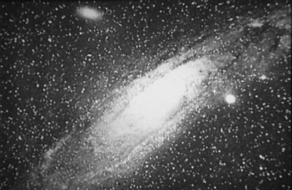

История наблюдения
Примерно в 964 году персидский астроном Абд ар-Рахман ас-Суфи первым описал Галактику Андромеды. Он назвал его в своей Книге неподвижных звезд «туманным пятном». Звездные карты того периода пометили его как Маленькое Облако. В 1612 году немецкий астроном Симон Мариус дал раннее описание Галактики Андромеды, основанное на телескопических наблюдениях. Пьер Луи Мопертюи в 1745 году предположил, что размытое пятно было островной вселенной. В 1764 году Шарль Мессье каталогизировал Андромеду как объект M31 и ошибочно назвал Мариуса первооткрывателем, несмотря на то, что он был виден невооруженным глазом. В 1785 году астроном Уильям Гершель заметил слабый красноватый оттенок в части центральной Андромеды. Он считал Андромеду ближайшей из всех «великих туманностей », и, он считал, что расстояние до нее не более чем в 2000 увеличилось расстояние Сириуса. , или примерно 18 000 лет (5,5 тыс. Пк ). В 1850 году Уильям Парсонс, 3-й граф Росс сделал первый рисунок спиральной структуры Андромеды . . В 1864 году с Уильям Хаггинс заметил, что спектр Андромеда отличалась от газовой туманности. Спектры Андромеды отображают континуум из частот , наложенный на темные линии поглощения , которые идентифицировали химический состав объекта. Спектр Андромеды очень похож на спектры отдельных звезд, и из этого был сделан вывод, что Андромеда имеет звездную природу. В 1885 году в Андромеде была замечена сверхновая (известная как S Andromedae ), первая и пока единственная наблюдаемая в этой галактике. В то время Андромеда считалась ближайшим объектом, поэтому причиной было гораздо менее яркое и не связанное с этим событием, названное новой , и было названо соответственно; «Новая 1885». В 1888 году Исаак Робертс сделал одну из первых фотографий Андромеды, которая до сих пор считалась туманностью в нашей галактике. Робертс ошибочно принял Андромеду и другие спиральные туманности за формирующиеся солнечные системы. В 1912 году Весто Слайфер применил спектроскопию для измерения Солнечной лучевой скорости Андромеда по отношению к нашей системе - самая большая скорость, которая когда-либо измерялась, на уровне 300 км / с (190 миль / с).
Общее
Расчетное расстояние от Галактики Андромеды до было удвоено в 1953 году, когда было обнаружено, что существует другой, более тусклый тип типовые звезды-цефеиды . В 1990-х годах измерения как стандартные красных гигантов , так и красных сгустков звезд по измерениям со спутника Hipparcos использовались для калибровки расстояний до цефеид.
Формирование и история
Галактика Андромеды образовалась примерно 10 миллиардов лет назад в результате столкновения и последующее слияние более мелких протогалактик . Это сильное столкновение сформировало большую часть (богатого металлами) галактического гало и протяженного диска галактики. В течение этой эпохи скорость звездообразования была бы очень высокой , вплоть до того, что она стала бы светящейся инфракрасной галактикой примерно на 100 миллионов лет. Андромеда и Галактика Треугольника имели очень близкий проход 2–4 миллиарда лет назад. Это событие вызвало высокие темпы звездообразования на диске Галактики Андромеды - даже в некоторых шаровых скоплениях - нарушило внешний диск M33. Считается, что за последние 2 миллиарда лет звездообразование по всему диску Андромеды уменьшилось до состояния, близкого к бездействию. Были проведены встречи с галактиками-спутниками, такими как M32, M110 и другими, которые уже были поглощены галактикой Андромеды. Эти сформировали такие структуры, как Гигантский звездный поток Андромеды . Считается, что галактика с влиянием примерно 100 миллионов лет назад к вращающемуся в противоположных направлениях газу в центре Андромеды, а также за присутствие там относительно молодого (100 миллионов лет) звездного населения.
Оценка расстояния
Для оценки расстояний от Земли до Галактики Андромеды использовались по крайней мере четыре различных метода. В 2003 году с использованием инфракрасных колебаний поверхностной яркости (I-SBF) и корректировки на новое значение периодической светимости и поправки на металличность -0,2 mag dex в (O / H), оценка составила 2,57 ± Было получено 0,06 миллиона световых лет (1,625 × 10 ± 3,8 × 10 астрономических единиц ). Метод среднего цефеид 2004 года оценил расстояние в 2,51 ± 0,13 миллиона световых лет (770 ± 40 кпк). В 2005 году в галактике Андромеды была открыта затменная двойная звезда . Двойная система представляет собой две горячие голубые звезды типов O и B. Изучая затмения звезд, астрономы смогли измерить их размеры. Зная размеры и температуру звезд, они смогли измерить их абсолютную звездную величину . Когда визуал и абсолютные звездные значения известны, расстояние до звезды можно рассчитать. Звезды на расстоянии 2,52 × 10 ^ ± 0,14 × 10 ^ лет (1,594 × 10 ± 8,9 × 10 а.е.), а вся Галактика Андромеды - примерно на 2,5 × 10 ^ лы (1,6 × 10 а.е.). Это новое значение отлично согласуется с предыдущим независимым значением расстояния на основе цефеид. Метод TRGB также использовался в 2005 году, давая расстояние 2,56 × 10 ^ ± 0,08 × 10 ^ ly (1,619 × 10 ± 5,1 × 10 а.е.). Усредненные вместе, эти качества расстояния дают значение 2,54 × 10 ^ ± 0,11 × 10 ^ лы (1,606 × 10 ± 7,0 × 10 а.е.). Отсюда диаметр Андромеды в самом широком месте оценивается в 220 ± 3 км (67 450 ± 920 пк). Применяя тригонометрию (угловой диаметр ), это эквивалентно кажущейся стороне 4,96 ° в небе.
Оценка массы
До 2018 года оценки массы гало Галактики Андромеды (включая темную материю ) давали значение приблизительно 1,5 × 10 M☉по сравнению с 8 × 10 M☉для Млечного Пути. Это противоречило более ранним измерениям, которые, кажется, указывали на то, что Галактика Андромеды и Млечный Путь почти равны посе. В 2018 году по результатам радиосвязи было повторно установлено равенство масс примерно 8 × 10 M☉. В 2006 году было установлено, что в сфероиде Галактики Андромеды плотность звезды выше, чем у Млечного Пути, и ее галактический звездный диск был примерно в два раза больше диаметра Млечного Пути. Общая масса Галактики Андромеды оценивается в диапазоне от 8 × 10 M☉до 1,1 × 10 M☉. Звездная масса M31 составляет 10-15 × 10 M☉, при этом 30% этой массы приходится на центральный балдж , 56% - на диск , оставшиеся 14% - в звездный гало . Результаты радиоизлучения исследуются как наиболее вероятные по состоянию на 2018 год, хотя этот вопрос все еще активно исследуется рядом исследовательских групп по всему миру. По состоянию на 2019 год текущие расчеты, основанные на измерениях космической скорости и динамической массы, показывают, что Галактика Андромеды имеет размер 0,8 × 10 M☉, что составляет лишь половину новой массы Млечного Пути, рассчитанной в 2019 году как 1,5 × 10. M☉. Помимо звезд, межзвездная среда Галактики Андромеды содержит не менее 7,2 × 10 M☉в форме нейтрального водорода , не менее 3 , 4 × 10 M☉в виде молекулярного водород (в пределах 10 килопарсек) и 5,4 × 10 M☉пыли . Галактика Андромеды окружена массивным гало горячего газа, который, по оценкам, содержит половину массы звезды в галактике. Почти невидимое гало простирается на миллион световых лет от своей галактики, на полпути к нашей галактике Млечный Путь. Моделирование галактик показывает, что гало образовалось одновременно с Галактикой Андромеды. Гало обогащено элементами тяжелее водорода и гелия, образованными из сверхновых , и его свойства соответствуют свойствам, ожидаемым для галактики, расположенной в «зеленой долине» диаграммы цвет-величина Галактики (см. ниже ). Сверхновые вспыхивают в заполненном звездми диске Галактики Андромеды и выбрасывают эти более тяжелые элементы в космосе. За время жизни Галактики Андромеда почти половина тяжелых элементов, образованных ее звездами, была выброшена за пределы звездного диска галактики диаметром 200 000 световых лет.
Оценки светимости
По сравнению с Млечным. Кстати, в галактике Андромеды, преобладают более старые звезды с возрастом>7 × 10 лет. Расчетная светимость Галактики Андромеды, ~ 2.6 × 10 L☉, примерно на 25% выше, чем у нашей галактики. Галактика имеет высокое наклонение , если смотреть с Земли, и ее межзвездная пыль поглощает неизвестное количество света, поэтому ее фактическая яркость трудно оценить, и другие приводят к другим значениям светимости Галактики Андромеды (некоторые авторы даже предполагают, что это вторая по яркости галактики в радиусе 10 мега-парсек от Млечного Пути после Галактика Сомбреро с абсолютной величиной около -22,21 или около того). Оценка, проведенная с помощью космического телескопа Спитцера , проведенное в 2010 году, показывает, что абсолютная звездная величина (синим цветом) составляет -20,89 (с цветовой индекс , равный +0,63, соответствует абсолютной визуальной величине -21,52 по сравнению с -20,9 для Млечного Пути) и общей светимости на этой длине волны 3,64 × 10 L☉. звездообразования в Млечном Пути намного выше, при этом Галактика Андромеды производит только около одной солнечной массы в год по сравнению с 3-5 массами Солнца для Млечного Пути. Количество новых в Млечном Пути также вдвое больше, чем в Галактике Андромеды. Это говорит о том, что последняя когда-то пережила большую фазу звездообразования, но сейчас находится в относительном состоянии покоя, тогда как Млечный Путь переживает более активное звездообразование. Если это продолжится, светимость Млечного Пути может в конечном итоге превысить яркость Галактики Андромеды. Согласно недавним исследованиям, Галактика Андромеды находится в том, что на диаграмме цвет-звездная величина Галактики известно как «зеленая долина», область, населенная галактиками, подобными Млечному Пути в переходном периоде. от «синего облака» (галактики, активно образующие новые звезды) до «красной последовательности» (галактики, в которых отсутствует звездообразование). Активность звездообразования в галактиках зеленой долины замедляется, поскольку в межзвездной среде заканчивается звездообразующий газ. Ожидается, что в смоделированных галактиках со свойствами, аналогичными галактике Андромеды, звездообразование прекратится в течение примерно пяти миллиардов лет с настоящего момента, даже с учетом ожидаемого кратковременного увеличения скорости звездообразования из-за столкновения Галактики Андромеды и Млечный Путь.
Структура
Судя по внешнему виду в видимом свете, Галактика Андромеды классифицируется как SA b галактика в расширенной системе классификации спиральных галактик де Вокулёра - Сэндиджа. Однако инфракрасные данные обзора 2MASS и космического телескопа Spitzer показали, что Андромеда на самом деле спиральной галактикой с перемычкой , как Млечный Путь, с полосой Андромеды. большая ось ориентирована на 55 градусов против часовой стрелки от большой оси диска. В 2005 году астрономы использовали телескопы Кека , чтобы показать, что тонкая россыпь звезд, выходящая из галактики, на самом деле является самым основным диском. Это означает, что спиральный диск звезд в Галактике Андромеды в три раза больше в диаметре, чем предполагалось ранее. Это доказательство существования огромного протяженного звездного диска, который составляет галактику более 220 000 световых лет (67 килопарсек ) в диаметре. Ранее размер Галактики Андромеды оценивался в диапазоне от 70 000 до 120 000 световых лет (от 21 до 37 кпк) в поперечнике. Галактика наклонена относительно Земли примерно на 77 ° (при этом угол в 90 ° будет просматриваться прямо сбоку). Анализ формы поперечного сечения галактики, похоже, демонстрирует ярко выраженную S-образную деформацию, а не просто плоский диск. Возможной причиной такого перекоса могло быть гравитационное взаимодействие со спутниками галактик вблизи Галактики Андромеды. Галактика M33 может быть причиной некоторой деформации в рукавах Андромеды, хотя требуются более точные расстояния и лучевые скорости. Спектроскопические исследования предоставили подробные измерения вращения галактики Андромеды как функции радиального расстояния от ядра. Скорость вращения имеет максимальное значение 225 км / с (140 миль / с) на расстоянии 1300 лет (82000000 AU ) от ядра, а ее минимальное значение, возможно, составляет всего 50 км / с (31 миль / с) на расстоянии 7000 св. Лет (440 000 000 а.е.) от ядра. Далее скорость вращения увеличивается до радиуса 33000 световых лет (2,1 × 10 а.е.), где развивается пика в 250 км / с (160 миль / с). За пределами этого расстояния медленно падают до 200 км / с (120 миль / с) на скорости 80 000 св. Лет (5,1 × 10 а.е.). Эти измерения скорости предполагают концентрированную массу примерно 6 × 10 M☉в ядре . Общая масса галактики увеличивается линейно до 45000 св. Лет (2,8 × 10 а.е.), а затем медленнее выходит за пределы этого радиуса.
Ядро
Известно, что в самом центре галактики Андромеда находится плотное и компактное звездное скопление. В большой телескоп он представляет собой визуальное впечатление звезды, заключенной в более рассеянную всеобщую выпуклость. В 1991 году космический телескоп Хаббл был использован для получения изображения внутреннего ядра галактики Андромеды. Ядро состоит из двух концентраций, разделенных 1,5 пк (4,9 св ). Более яркая информация, обозначенная как P1, смещена от центра галактики. Концентрация диммера, P2, находится в истинном центре галактики и содержит черную дыру , измеренную в 3–5 × 10 M☉в 1993 г. и 1,1–2,3 × 10 M☉в 2005 г. . дисперсия скорости вещества вокруг него, по измерениям, составляет ≈ 160 км / с (99 миль / с ).Рентгеновский телескоп Chandra изображение центра галактики Андромеда. Источник рентгеновского излучения, вероятно, рентгеновские двойные звезды, в центральной области галактики выглядят как желтоватые точки. Синий в положении сверхмассивной черной дыры .
Дискретные источники
По-видимому, к концу 1968 г. рентгеновское излучение от Галактики Андромеды не было обнаружено. Полет на воздушном шаре 20 октября 1970 года установил верхний предел обнаруживаемых жестких рентгеновских лучей от Галактики Андромеды. Обзор всего неба Swift BAT успешно обнаружил жесткое рентгеновское излучение, исходящее из области, расположенной в 6 угловых секундах от центра галактики. Позже было обнаружено, что излучение с энергией выше 25 кэВ происходит от единственного источника, названного 3XMM J004232.1 + 411314 , идентифицировано как двойная система, в которой находится компактный объект (нейтронная звезда или черная дыра) аккрецирует вещество от звезды. С тех пор в Галактике Андромеды было обнаружено несколько источников рентгеновского излучения Европейского космического агентства (ESA) XMM-Newton орбитальная обсерватория. Робин Барнард и др. предположили, что это кандидаты в черные дыры или нейтронные звезды , которые нагревают входящий газ до миллионов кельвинов и испускают рентгеновские лучи. Нейтронные звезды и черные дыры можно отличить. В ходе наблюдательной кампании космической миссии NuSTAR было обнаружено 40 таких объектов в галактике. В 2012 году в галактике Андромеды был обнаружен микроквазар , радиовсплеск, исходящий от меньшей черной дыры. Черная дыра-прародитель расположен недалеко от центра Галактики и имеет около 10 M☉. Он был обнаружен с помощью данных, собранных с помощью зонда XMM-Newton Европейского космического агентства , и впоследствии наблюдался с помощью Swift Gamma-Ray НАСА . Взрывная миссия и Рентгеновская обсерватория Чандра , Очень большая матрица и Очень длинная база . Микроквазар был первым наблюдаемым в галактике Андромеды и первым за пределами галактики Млечный Путь.
Шаровые скопления
.jpg)
Всего насчитывается около 460 шаровых скоплений. связано с галактикой Андромеды. Самое массивное из этих скоплений, идентифицированное как Mayall II , получившее название Globular One, имеет большую светимость, чем любое другое известное шаровое скопление в Местной группе галактик. Оно состоит из нескольких миллионов звезд и примерно в два раза ярче, чем Омега Центавра , самое яркое из известных шаровых скоплений в Млечном Пути. Globular One (или G1) имеет несколько звездных популяций и структуру, слишком массивную для обычного шарообразного. В результате некоторые считают G1 остатком ядра карликовой галактики , которая была поглощена Андромедой в далеком прошлом. Шаровик с наибольшей видимой яркостью находится в восточной половине юго-западного рукава. Другое массивное шаровое скопление, названное 037-B327 и обнаруженное в 2006 году, сильно покрасневшее от межзвездной пыли Галактики Андромеды , считалось более массивным, чем G1 и крупнейшее скопление Местной группы; однако другие исследования показали, что оно действительно похоже по свойствам на G1. В отличие от шаровых скоплений Млечного Пути, которые показывают относительно низкую дисперсию возраста, шаровые скопления Галактики Андромеды имеют гораздо больший диапазон возрастов: от систем столь же старых, как сама галактика, до гораздо более молодых систем с возрастом от нескольких сотен миллионов до пяти миллиардов лет. В 2005 году астрономы обнаружили совершенно новый тип звездного скопления в Галактике Андромеды. Недавно обнаруженные скопления содержат сотни тысяч звезд, такое же количество звезд, которые можно найти в шаровых скоплениях. От шаровых скоплений их отличает то, что они намного больше - несколько сотен световых лет в поперечнике и в сотни раз менее плотные. Таким образом, расстояния между звездами намного больше в пределах недавно обнаруженных протяженных скоплений.
Спутники
Подобно Млечному Пути, Галактика Андромеды имеет галактик-спутников , состоящих из более чем 20 известных карликовых галактики . Наиболее известные и наиболее легко наблюдаемые галактики-спутники - это M32 и M110 . Судя по имеющимся данным, M32 в прошлом близко сталкивалась с галактикой Андромеды. M32, возможно, когда-то была более крупной галактикой, звездный диск которой был удален M31, и претерпела резкое увеличение звездообразования в области ядра, которое продолжалось до недавнего прошлого. M110, похоже, также взаимодействует с галактикой Андромеды, и астрономы получили последний поток богатых металлами звезд, которые, похоже, были отделены от этих галактик-спутников. M110 действительно содержит пыльную полосу, которая может указывать на недавнее или продолжающееся звездообразование. У M32 также есть молодое звездное население. В 2006 году было обнаружено, что девять галактик-спутников лежат в плоскости, которая пересекает ядро галактики Андромеды; они не расположены случайным образом, как можно было бы ожидать от независимых взаимодействий. Это может указывать на общее приливное происхождение спутников.
Событие PA-99-N2 и возможная экзопланета в галактике
PA-99-N2 было событием микролинзирования, обнаруженным в галактике Андромеды в 1999 г. Это гравитационное линзирование красного гиганта с массой от 0,02 до 3,6 раз больше массы Солнца, что предполагает эта звезда, вероятно, вращается вокруг планеты. Эта возможная экзопланета имеет бы большую массу 6,34 раза больше, чем Юпитер. Если окончательно подтвердится, это будет первая найденная внегалактическая планета . Однако позже в этом событии были обнаружены аномалии.